nile <- data.frame(year = 1871:1970, flow = as.numeric(Nile))
fit_nile <- statmod(flow ~ gas(p = 1, q = 1, time = year),
distrib = gaussian1_distrib(), data = nile)
summary(fit_nile)
#> A statmod fit
#>
#> Call: statmod(formula = flow ~ gas(p = 1, q = 1, time = year), distrib = gaussian1_distrib(),
#> data = nile)
#>
#> Distribution: gaussian1 Observations: 100
#>
#> === mu [identity link]
#>
#> Parametric terms
#> estimate se z p lower upper
#> (Intercept) 932.1 46.47 20.06 < 1e-16 841.1 1023
#>
#> gas(p = 1, q = 1, time = year) [3 parameters, edf 2.00]
#> estimate se lower upper
#> omega (held) 0
#> kappa1 7188 2368 3768 13710
#> xi1 0.8447 0.1139 0.4287 0.9652
#>
#> === sigma [log link]
#>
#> Parametric terms
#> estimate se z p lower upper
#> (Intercept) 4.955 0.07071 70.07 < 1e-16 4.816 5.094
#>
#> 95% intervals, bayesian variance
#> conditional log-likelihood -637.396819 effective df 4.00
#> cAIC 1282.794 cBIC 1293.214
#> fitted in 1.67 s
#> inner max |grad|/se 1.7e-07 min eigen 0.41
#> 1 note: print(summary(fit), notes = TRUE)13 Time series
In a time series the distribution of an observation depends on the observations before it. statmodels7 has two model terms for this kind of dependence. The term gas() adds to the predictor of one parameter of the distribution a level \(f_t\), and it updates the level at each time with the score of the previous observation (Creal, Koopman, and Lucas 2013; Harvey 2013). The term regime() makes the model a hidden Markov model (Hamilton 1989; Zucchini, MacDonald, and Langrock 2016). At each time the series is in one of \(k\) states, which we do not observe. The state at time \(t\) depends only on the state at time \(t - 1\), through a matrix of transition probabilities, and each state adds its own level to the predictor. In both cases the contribution of the term at one time depends on the data at earlier times, so it is computed by a recursion and it cannot be written as a block of a design matrix. We call such a term structural. A model can contain one structural term, in the equation of any parameter of the distribution.
13.1 The score-driven filter
The term gas() adds a level \(f_t\) to the predictor of one parameter of the distribution. If \(\theta_t\) is that parameter and \(g\) its link, \[
g(\theta_t) = \eta_t = x_t^\top \beta + f_t, \qquad
f_t = \omega + \sum_{i=1}^{p} \kappa_i\, u_{t-i} + \sum_{j=1}^{q} \xi_j f_{t-j},
\] where \(x_t^\top \beta\) is the rest of the predictor. The recursion is driven by the scaled score of the previous observations (Creal, Koopman, and Lucas 2013; Harvey 2013), \[
u_t = s_t\, \mathcal{I}_t^{-d}, \qquad
s_t = \frac{\partial \log p(y_t)}{\partial \eta_t}, \qquad
\mathcal{I}_t = \mathrm{E}\left[-\frac{\partial^2 \log p(y_t)}{\partial \eta_t^2}\right].
\] The score \(s_t\) is the derivative of the log-density of observation \(t\) with respect to the predictor. An observation that the current predictor fits badly has a large score, and the recursion moves the predictor of the next times in the direction that would have fitted it better. The quantity \(\mathcal{I}_t\) is the expected information of the predictor, which is also the variance of \(s_t\). The argument scaling of gas() sets the power \(d\), and three values are common:
- with \(d = 0\), the default, the score is used as it is;
- with \(d = 1/2\) the score is divided by its standard deviation, so \(u_t\) has variance one;
- with \(d = 1\) the score is multiplied by the inverse of its information, which is the step of Newton’s method for one observation.
For every \(d\) the scaled score has mean zero, so \(f_t\) fluctuates around \(\omega/(1 - \sum_j \xi_j)\), and the recursion starts there. If \(\mathcal{I}_t\) is the same at every time, the power \(d\) multiplies \(u_t\) by a constant, the loadings absorb that constant, and the model does not depend on \(d\). If \(\mathcal{I}_t\) changes over time, each \(d\) gives a different model.
The intercept of the predictor and the level \(\omega\) cannot both be estimated. Both move the predictor by a constant: with an intercept \(\beta_0\) the predictor fluctuates around \(\beta_0 + \omega/(1 - \sum_j\xi_j)\), and adding \(c\) to \(\beta_0\) while subtracting \(c\,(1 - \sum_j\xi_j)\) from \(\omega\) leaves every \(\eta_t\) unchanged. When the formula has an intercept, statmod() therefore holds \(\omega\) at zero and estimates \(\beta_0\), which is then the level around which the predictor fluctuates. Written without an intercept, as y ~ 0 + gas(...), the same model has \(\omega\) free instead, and the two spellings are related by \[
\beta_0 = \frac{\omega}{1 - \sum_j \xi_j}, \qquad
\omega = \beta_0\,\Bigl(1 - \sum_j \xi_j\Bigr).
\]
Several models of the time series literature are score-driven models with a particular family, parameter, link and power \(d\), and gas() fits them by naming those four. Table 13.1 lists the ones of this chapter, and the following sections fit each of them and compare the fit with the package that implements the model. Where the information is constant, every \(d\) gives the same model, and the table says “any”.
gas() fits exactly.
| model | family | parameter, link | \(d\) | section |
|---|---|---|---|---|
| ARMA(1, 1) | gaussian1_distrib() |
mean, identity | any | Section 13.1 |
| GARCH(1, 1) (Bollerslev 1986) | gaussian2_distrib() |
variance, identity | 1 | Section 13.2 |
| Beta-t-EGARCH (Harvey 2013) | student_t1_distrib() |
scale, log | any | Section 13.2 |
| INGARCH(1, 1) (Ferland, Latour, and Oraichi 2006) | poisson_distrib() |
mean, identity | 1 | Section 13.3 |
| ACD(1, 1) (Engle and Russell 1998) | exponential_distrib() |
mean, identity | 1 | Section 13.4 |
| logarithmic ACD, second form (Bauwens and Giot 2000) | exponential_distrib() |
mean, log | any | Section 13.4 |
The working parametrization
The loadings and the persistences are constrained. A loading is positive, so that an observation the predictor underestimates raises the predictor of the next times, and the persistences must keep the recursion stationary, so that \(f_t\) fluctuates around its level instead of drifting away from it. gas() does not search the parameters in these constrained sets. It searches unconstrained working parameters, from which the parameters of the model follow, so that every point the search visits is an admissible model.
With one lag of each kind, \(p = q = 1\), the recursion is \(f_t = \omega + \kappa\, u_{t-1} + \xi f_{t-1}\), and it is stationary when \(|\xi| < 1\). The working parameters are \[ a = \log \kappa, \qquad z = \operatorname{atanh} \xi = \frac{1}{2}\log\frac{1 + \xi}{1 - \xi}, \] so \(\kappa = e^{a}\) is positive and \(\xi = \tanh z\) lies in \((-1, 1)\) for every real \(a\) and \(z\). The level \(\omega\) needs no constraint and is its own working parameter. The summary reports \(\kappa\) and \(\xi\), and builds their intervals on the working scale and maps them back, so the interval of \(\kappa\) is positive and that of \(\xi\) lies inside \((-1, 1)\).
With several lags each loading has its own working parameter, \(a_i = \log \kappa_i\) for \(i = 1, \dots, p\). The persistences need more care. The recursion is stationary when the roots of \(1 - \xi_1 z - \dots - \xi_q z^q\) lie outside the unit circle, and this region is not a box: for \(q = 2\) it is the triangle \(|\xi_2| < 1\), \(\xi_2 + \xi_1 < 1\), \(\xi_2 - \xi_1 < 1\). The recursion is therefore parametrized by its partial autocorrelations \(r_1, \dots, r_q\), which range over the box \((-1, 1)^q\), and every point of the box gives a stationary recursion, each stationary recursion being given by exactly one point (Barndorff-Nielsen and Schou 1973; Monahan 1984). Each partial autocorrelation has the working parameter \(z_k = \operatorname{atanh} r_k\), and the persistences follow from the Durbin-Levinson recursion, \[ \xi^{(k)}_k = r_k, \qquad \xi^{(k)}_j = \xi^{(k-1)}_j - r_k\, \xi^{(k-1)}_{k-j}, \quad j = 1, \dots, k - 1, \] for \(k = 1, \dots, q\), with \(\xi_j = \xi^{(q)}_j\). For \(q = 2\) this gives \(\xi_1 = r_1 (1 - r_2)\) and \(\xi_2 = r_2\). The same recursion gives \[ 1 - \sum_{j=1}^{q} \xi_j = \prod_{k=1}^{q} (1 - r_k), \] so the level \(\omega / (1 - \sum_j \xi_j)\) around which \(f_t\) fluctuates is finite at every point of the box. With one lag the persistence and the partial autocorrelation coincide. With several, the summary reports the persistences \(\xi_j\), with standard errors from the Jacobian of the Durbin-Levinson recursion, and builds their intervals on the scale of the persistences, because the region they range over is not a box.
The mean of a gaussian response
The series Nile gives the annual flow of the river Nile at Aswan from 1871 to 1970, in \(10^8\) cubic meters (Cobb 1978). We put the filter in the equation of the mean of a gaussian response: \[
y_t \sim \mathrm{N}(\mu_t, \sigma), \qquad
\mu_t = \beta_0 + f_t, \qquad
f_t = \kappa\, u_{t-1} + \xi f_{t-1}.
\] The score with respect to \(\mu_t\) and its information are \[
s_t = \frac{y_t - \mu_t}{\sigma^2}, \qquad \mathcal{I}_t = \frac{1}{\sigma^2},
\] so \(u_t = (y_t - \mu_t)\,\sigma^{2(d - 1)}\). An observation above its mean raises the mean of the next year, and the parameter \(\xi\) sets how long the effect lasts. The information does not change over time, so \(d\) only sets the units of \(\kappa\). We fit the model with the default \(d = 0\):
The argument p of gas() is the number of lagged scores and q the number of lagged levels, and time gives the order of the observations. The summary marks \(\omega\) as held at zero. With \(d = 1\) the fit is the same, and only the loading changes, by the factor \(\sigma^2\):
fit_nile_1 <- statmod(flow ~ gas(p = 1, q = 1, time = year, scaling = 1),
distrib = gaussian1_distrib(), data = nile)
c(d_0 = logLik(fit_nile), d_1 = logLik(fit_nile_1))
#> d_0 d_1
#> -637.3968 -637.3968
c(kappa_d0_over_s2 = coef(fit_nile)$mu[["gas.kappa1"]] /
exp(2 * coef(fit_nile)$sigma[["(Intercept)"]]),
kappa_d1 = coef(fit_nile_1)$mu[["gas.kappa1"]])
#> kappa_d0_over_s2 kappa_d1
#> 0.3570401 0.3570401With \(d = 1\) the scaled score is the residual \(y_t - \mu_t\), and the loading \(\hat\kappa = 0.357\) is the fraction of the last residual added to the mean. With \(\hat\xi = 0.845\), a flow that exceeds its mean by 100 raises the mean of the next year by about 36, and a third of that remains after 7 years.
This model is a model of the autoregressive moving average family (Brockwell and Davis 1991). Writing \(e_t = y_t - \mu_t\) and substituting the recursion with \(d = 1\) gives \[
y_t - \beta_0 = \xi\,(y_{t-1} - \beta_0) + e_t + (\kappa - \xi)\, e_{t-1},
\] an ARMA(1, 1) with autoregressive coefficient \(\xi\) and moving average coefficient \(\kappa - \xi\). The function arima() of stats fits it by maximum likelihood:
arima_nile <- arima(nile$flow, order = c(1, 0, 1), method = "ML")
arima_nile
#>
#> Call:
#> arima(x = nile$flow, order = c(1, 0, 1), method = "ML")
#>
#> Coefficients:
#> ar1 ma1 intercept
#> 0.8610 -0.5177 920.7037
#> s.e. 0.1067 0.1908 46.6692
#>
#> sigma^2 estimated as 19892: log likelihood = -637.04, aic = 1282.08
cbind(statmod = c(ar1 = b_nile, ma1 = a_nile - b_nile,
intercept = cf_nile[["(Intercept)"]]),
arima = coef(arima_nile))
#> statmod arima
#> ar1 0.8446824 0.8610401
#> ma1 -0.4876423 -0.5176589
#> intercept 932.1498053 920.7036969
c(statmod = logLik(fit_nile), arima = logLik(arima_nile))
#> statmod arima
#> -637.3968 -637.0388The estimates are close but not equal, and so are the log-likelihoods. The two functions maximize different likelihoods of the same model. Our recursion starts at the level \(f_1 = 0\), so the first observation has variance \(\sigma^2\). The likelihood of arima() gives the first observation the variance of the stationary process, which is larger. Both log-likelihoods are maximized over all the parameters, \(\sigma\) included.
A second lagged level, q = 2, gives the recursion \(f_t = \kappa u_{t-1} + \xi_1 f_{t-1} + \xi_2 f_{t-2}\). We compare the two models by the likelihood ratio:
fit_nile2 <- statmod(flow ~ gas(p = 1, q = 2, time = year),
distrib = gaussian1_distrib(), data = nile)
summary(fit_nile2)
#> A statmod fit
#>
#> Call: statmod(formula = flow ~ gas(p = 1, q = 2, time = year), distrib = gaussian1_distrib(),
#> data = nile)
#>
#> Distribution: gaussian1 Observations: 100
#>
#> === mu [identity link]
#>
#> Parametric terms
#> estimate se z p lower upper
#> (Intercept) 941.3 62.94 14.95 < 1e-16 817.9 1065
#>
#> gas(p = 1, q = 2, time = year) [4 parameters, edf 3.00]
#> estimate se lower upper
#> omega (held) 0
#> kappa1 7372 2329 3969 13690
#> xi1 0.6459 0.2974 0.06301 1.229
#> xi2 0.2297 0.3287 -0.4145 0.8739
#>
#> === sigma [log link]
#>
#> Parametric terms
#> estimate se z p lower upper
#> (Intercept) 4.953 0.07071 70.04 < 1e-16 4.814 5.091
#>
#> 95% intervals, bayesian variance
#> conditional log-likelihood -637.169125 effective df 5.00
#> cAIC 1284.338 cBIC 1297.364
#> fitted in 810 ms
#> inner max |grad|/se 1.9e-08 min eigen 0.36
#> 1 note: print(summary(fit), notes = TRUE)
l0 <- logLik(fit_nile)
l1 <- logLik(fit_nile2)
lr_nile <- 2 * (as.numeric(l1) - as.numeric(l0))
lr_nile
#> [1] 0.4553896
pchisq(lr_nile, df = 1, lower.tail = FALSE)
#> [1] 0.4997866The smaller model has \(\xi_2 = 0\), a point inside the range of the partial autocorrelation, so the ratio has its usual \(\chi^2_1\) reference. It is 0.455, with a p-value of 0.500, and one lag is enough. With two lags the coefficients \(\xi_1\) and \(\xi_2\) are functions of both partial autocorrelations, and the region where the recursion is stationary is not a product of two intervals, so their intervals are built on the scale of the coefficients and can leave \((-1, 1)\), as the interval of \(\xi_1\) does here. Lagged scores are added in the same way with p, each with a loading of its own. Figure 13.1 shows the flows with the mean of the first model and its 95% confidence band, which predict() computes with se = TRUE.
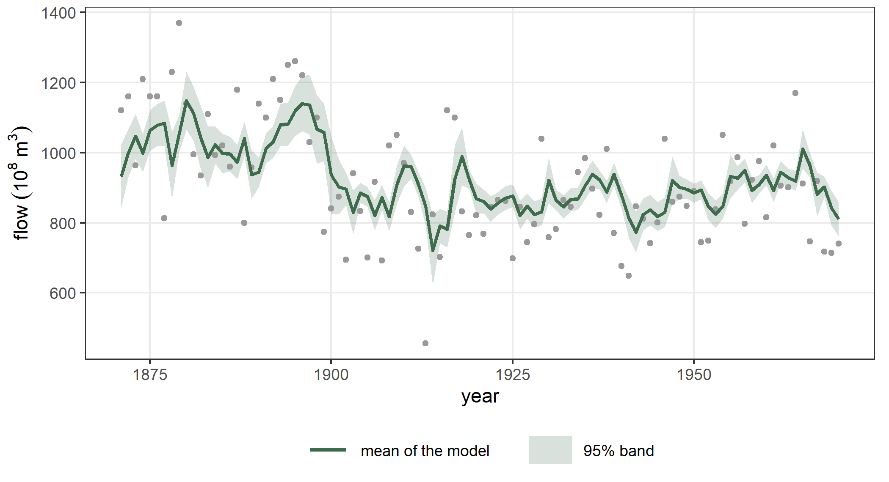
13.2 Volatility
The data set EuStockMarkets gives the daily closing prices of four European stock indices from 1991 to 1998. We use the German index DAX and its daily returns in percent, \(r_t = 100\,(\log P_t - \log P_{t-1})\). Returns go through quiet periods and turbulent periods, so their variance changes over time, and we put the filter in the equation of the variance or of the scale.
GARCH(1, 1)
The best-known model of a changing variance is the GARCH(1, 1) model (Bollerslev 1986), which writes the variance as \[
\sigma_t^2 = \omega_G + \alpha_G\,(r_{t-1} - \mu)^2 + \beta_G\,\sigma_{t-1}^2 .
\] The package rugarch fits it, and we print its table of estimates (Galanos 2026):
dax <- data.frame(day = 1:1859,
r = 100 * diff(log(as.numeric(EuStockMarkets[, "DAX"]))))
spec_n <- rugarch::ugarchspec(
variance.model = list(model = "sGARCH", garchOrder = c(1, 1)),
mean.model = list(armaOrder = c(0, 0), include.mean = TRUE),
distribution.model = "norm")
garch_n <- rugarch::ugarchfit(spec = spec_n, data = dax$r, solver = "hybrid")
garch_n@fit$matcoef
#> Estimate Std. Error t value Pr(>|t|)
#> mu 0.06535253 0.02157585 3.028967 2.453911e-03
#> omega 0.04756287 0.01281283 3.712129 2.055231e-04
#> alpha1 0.06845367 0.01497478 4.571263 4.847931e-06
#> beta1 0.88756875 0.02389685 37.141671 0.000000e+00The gaussian distribution with the variance \(\sigma_t^2\) as its parameter is gaussian2_distrib(). On the identity link of the variance the score and its information are \[
s_t = \frac{(r_t - \mu)^2 - \sigma_t^2}{2\sigma_t^4}, \qquad
\mathcal{I}_t = \frac{1}{2\sigma_t^4},
\] and the information changes over time. With \(d = 1\) the recursion is driven by \(u_t = (r_t - \mu)^2 - \sigma_t^2\). We write the model with an intercept \(\gamma_0\): \[
r_t \sim \mathrm{N}(\mu, \sigma_t^2), \qquad
\sigma_t^2 = \gamma_0 + f_t, \qquad
f_t = \kappa\left[(r_{t-1} - \mu)^2 - \sigma_{t-1}^2\right] + \xi f_{t-1}.
\] Substituting \(f_t = \sigma_t^2 - \gamma_0\) gives \[
\sigma_t^2 = \gamma_0\,(1 - \xi) + \kappa\,(r_{t-1} - \mu)^2 +
(\xi - \kappa)\,\sigma_{t-1}^2,
\] the GARCH(1, 1) recursion with \(\omega_G = \gamma_0 (1 - \xi)\), \(\alpha_G = \kappa\) and \(\beta_G = \xi - \kappa\):
fit_garch <- statmod(r ~ 1 | sigma2 ~ gas(p = 1, q = 1, time = day, scaling = 1),
distrib = gaussian2_distrib(link_sigma2 = identity_link()),
data = dax)
summary(fit_garch)
#> A statmod fit
#>
#> Call: statmod(formula = r ~ 1 | sigma2 ~ gas(p = 1, q = 1, time = day,
#> scaling = 1), distrib = gaussian2_distrib(link_sigma2 = identity_link()),
#> data = dax)
#>
#> Distribution: gaussian2 Observations: 1859
#>
#> === mu [identity link]
#>
#> Parametric terms
#> estimate se z p lower upper
#> (Intercept) 0.06537 0.02158 3.03 0.002448 0.02308 0.1077
#>
#> === sigma2 [identity link]
#>
#> Parametric terms
#> estimate se z p lower upper
#> (Intercept) 1.075 0.09855 10.91 < 1e-16 0.8817 1.268
#>
#> gas(p = 1, q = 1, time = day, scaling = 1) [3 parameters, edf 2.00]
#> estimate se lower upper
#> omega (held) 0
#> kappa1 0.06781 0.01441 0.04471 0.1029
#> xi1 0.956 0.0129 0.9222 0.9753
#>
#> 95% intervals, bayesian variance
#> conditional log-likelihood -2594.807503 effective df 4.00
#> cAIC 5197.615 cBIC 5219.726
#> fitted in 410 ms
#> inner max |grad|/se 2e-08 min eigen 0.25
#> 1 note: print(summary(fit), notes = TRUE)
cf_g <- coef(fit_garch)$sigma2
cbind(statmod = c(mu = coef(fit_garch)$mu[["(Intercept)"]],
omega = cf_g[["(Intercept)"]] * (1 - cf_g[["gas.xi1"]]),
alpha1 = cf_g[["gas.kappa1"]],
beta1 = cf_g[["gas.xi1"]] - cf_g[["gas.kappa1"]]),
rugarch = rugarch::coef(garch_n))
#> statmod rugarch
#> mu 0.06537002 0.06535253
#> omega 0.04726846 0.04756287
#> alpha1 0.06781201 0.06845367
#> beta1 0.88821314 0.88756875
c(statmod = logLik(fit_garch), rugarch = rugarch::likelihood(garch_n))
#> statmod rugarch
#> -2594.808 -2594.796The estimates agree to two decimals, and the log-likelihoods differ by 0.011: rugarch starts the recursion at the mean of the squared residuals, and we start it at \(\gamma_0\). The identity link does not keep \(\sigma_t^2\) positive by itself. At these estimates \(\omega_G\), \(\alpha_G\) and \(\beta_G\) are positive, so every \(\sigma_t^2\) is positive, as in the GARCH model.
The logarithm of the scale
The variance can also be filtered on the logarithmic scale, which keeps it positive whatever the loadings are. With the gaussian distribution of scale \(\sigma_t\), \[ r_t \sim \mathrm{N}(\mu, \sigma_t), \qquad \log \sigma_t = \gamma_0 + f_t, \qquad f_t = \kappa\, u_{t-1} + \xi f_{t-1}, \] the score with respect to \(\log \sigma_t\) and its information are \[ s_t = z_t^2 - 1, \qquad \mathcal{I}_t = 2, \qquad z_t = \frac{r_t - \mu}{\sigma_t}. \] The information is constant, so \(d\) does not change the model. A return that is large compared with \(\sigma_t\) has a positive score and raises the scale of the next day; a small one lowers it.
fit_dax <- statmod(r ~ 1 | sigma ~ gas(p = 1, q = 1, time = day),
distrib = gaussian1_distrib(), data = dax)
summary(fit_dax)
#> A statmod fit
#>
#> Call: statmod(formula = r ~ 1 | sigma ~ gas(p = 1, q = 1, time = day),
#> distrib = gaussian1_distrib(), data = dax)
#>
#> Distribution: gaussian1 Observations: 1859
#>
#> === mu [identity link]
#>
#> Parametric terms
#> estimate se z p lower upper
#> (Intercept) 0.06143 0.02224 2.762 0.005744 0.01784 0.105
#>
#> === sigma [log link]
#>
#> Parametric terms
#> estimate se z p lower upper
#> (Intercept) 0.03683 0.05242 0.7026 0.4823 -0.06591 0.1396
#>
#> gas(p = 1, q = 1, time = day) [3 parameters, edf 2.00]
#> estimate se lower upper
#> omega (held) 0
#> kappa1 0.008592 0.001539 0.006048 0.01221
#> xi1 0.9854 0.007426 0.9606 0.9947
#>
#> 95% intervals, bayesian variance
#> conditional log-likelihood -2616.349372 effective df 4.00
#> cAIC 5240.699 cBIC 5262.810
#> fitted in 260 ms
#> inner max |grad|/se 3.1e-10 min eigen 0.12
#> 1 note: print(summary(fit), notes = TRUE)
c(log_scale = logLik(fit_dax), garch = logLik(fit_garch))
#> log_scale garch
#> -2616.349 -2594.808Both models have four parameters. With the gaussian distribution the GARCH model has the larger log-likelihood, by 21.5. The two fitted standard deviations follow the same quiet and turbulent periods (their correlation over the days is 0.84), and Figure 13.2 shows them over the returns.
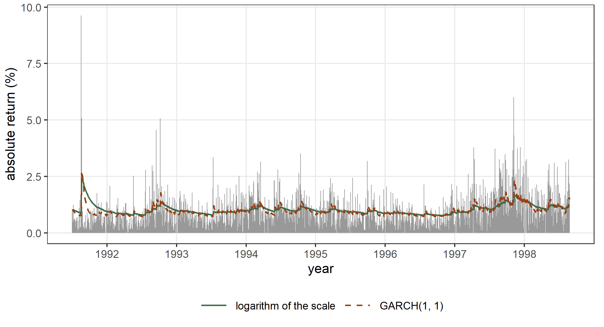
A heavy-tailed distribution
The recursion uses the score of whatever distribution the model carries, so the same term gives a different model with each family. Daily returns have heavier tails than the gaussian distribution. With the Student \(t\) distribution of location \(\mu\), scale \(\sigma_t\) and \(\nu\) degrees of freedom, the score with respect to \(\log \sigma_t\) and its information are \[
s_t = \frac{(\nu + 1)\, z_t^2}{\nu + z_t^2} - 1 , \qquad
\mathcal{I}_t = \frac{2\nu}{\nu + 3}.
\] The score tends to \(\nu\) as \(z_t\) grows. A single very large return therefore moves the scale by a bounded amount, while under the gaussian distribution its effect grows with \(z_t^2\) (Figure 13.4). The information is again constant, so \(d\) does not change the model. This model, a Student \(t\) response whose log-scale is driven by its own score, is the Beta-t-EGARCH model of Harvey (2013), so gas() fits it with the family and nothing else.
fit_dax_t <- statmod(r ~ 1 | sigma ~ gas(p = 1, q = 1, time = day),
distrib = student_t1_distrib(), data = dax)
summary(fit_dax_t)
#> A statmod fit
#>
#> Call: statmod(formula = r ~ 1 | sigma ~ gas(p = 1, q = 1, time = day),
#> distrib = student_t1_distrib(), data = dax)
#>
#> Distribution: student t1 Observations: 1859
#>
#> === mu [identity link]
#>
#> Parametric terms
#> estimate se z p lower upper
#> (Intercept) 0.07418 0.01884 3.938 8.207e-05 0.03726 0.1111
#>
#> === sigma [log link]
#>
#> Parametric terms
#> estimate se z p lower upper
#> (Intercept) -0.253 0.09831 -2.573 0.01008 -0.4457 -0.06028
#>
#> gas(p = 1, q = 1, time = day) [3 parameters, edf 2.00]
#> estimate se lower upper
#> omega (held) 0
#> kappa1 0.03595 0.007037 0.0245 0.05276
#> xi1 0.9886 0.005581 0.9704 0.9957
#>
#> === nu [log link]
#>
#> Parametric terms
#> estimate se z p lower upper
#> (Intercept) 1.82 0.1285 14.16 < 1e-16 1.568 2.072
#>
#> 95% intervals, bayesian variance
#> conditional log-likelihood -2485.825386 effective df 5.00
#> cAIC 4981.651 cBIC 5009.290
#> fitted in 440 ms
#> inner max |grad|/se 6.4e-08 min eigen 0.5
#> 1 note: print(summary(fit), notes = TRUE)
c(gaussian = AIC(fit_dax), t = AIC(fit_dax_t))
#> gaussian t
#> 5240.699 4981.651The \(t\) distribution has \(\hat\nu = 6.17\) and a much lower AIC. The gaussian distribution is the limit \(\nu \to \infty\), a point outside the range of \(\nu\), so the likelihood ratio between the two has no \(\chi^2\) reference and we compare them by the AIC. The GARCH(1, 1) model with the \(t\) distribution has five parameters, as ours does:
spec_t <- rugarch::ugarchspec(
variance.model = list(model = "sGARCH", garchOrder = c(1, 1)),
mean.model = list(armaOrder = c(0, 0), include.mean = TRUE),
distribution.model = "std")
garch_t <- rugarch::ugarchfit(spec = spec_t, data = dax$r, solver = "hybrid")
garch_t@fit$matcoef
#> Estimate Std. Error t value Pr(>|t|)
#> mu 0.07639896 0.018885909 4.045289 5.225855e-05
#> omega 0.02161709 0.008742444 2.472660 1.341118e-02
#> alpha1 0.07909045 0.016377365 4.829254 1.370458e-06
#> beta1 0.90358811 0.020428284 44.232208 0.000000e+00
#> shape 6.03405686 0.813542147 7.417018 1.196820e-13
c(statmod = logLik(fit_dax_t), rugarch = rugarch::likelihood(garch_t))
#> statmod rugarch
#> -2485.825 -2495.262With the \(t\) distribution the order is reversed: the score-driven model has the larger log-likelihood, by 9.4. The degrees of freedom of the two fits are close (6.17 here, 6.03 in the GARCH model). In the GARCH model a large return enters the variance as a squared residual whatever the distribution, while in the score-driven model the distribution decides how much it counts.
Figure 13.3 compares the standard deviations of the two score-driven models on the logarithm of the scale. The scale \(\sigma_t\) of the \(t\) distribution is not its standard deviation, which is \(\sigma_t\sqrt{\nu/(\nu - 2)}\), so we plot the latter for both models. After the large returns of August 1991 the gaussian model raises its standard deviation more and keeps it high longer, because each of those returns enters through \(z_t^2\); the \(t\) model bounds their effect.
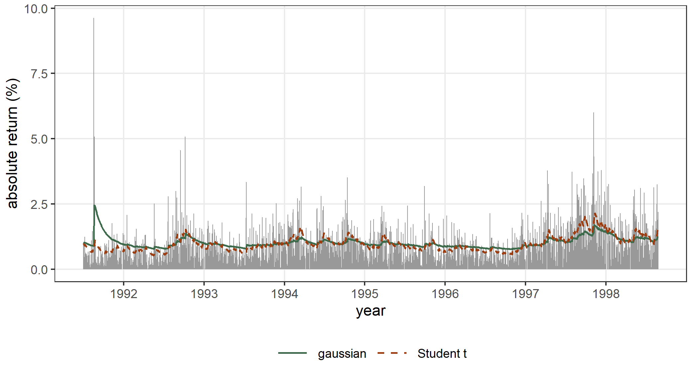
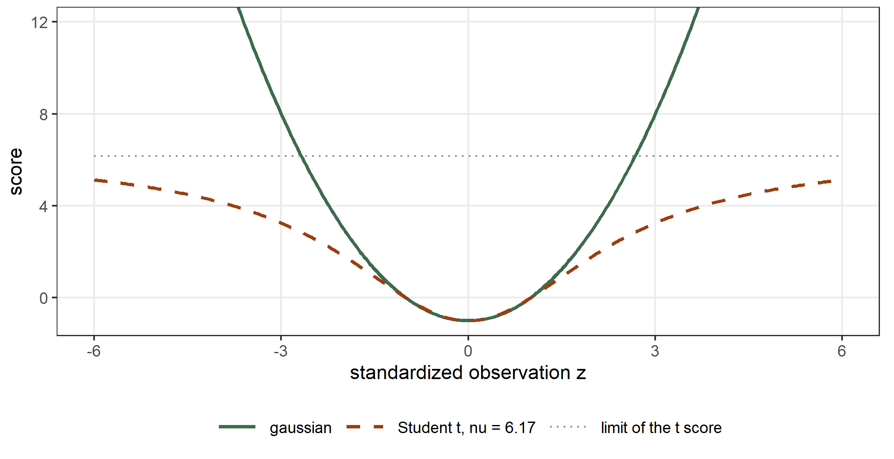
13.3 Counts
The series discoveries gives the number of great inventions and scientific discoveries in each year from 1860 to 1959. We put the filter in the equation of the mean of a Poisson response.
INGARCH(1, 1)
On the identity link the score with respect to \(\mu_t\) is \((y_t - \mu_t)/\mu_t\) and its information is \(1/\mu_t\), so with \(d = 1\) the recursion is driven by \(u_t = y_t - \mu_t\). With an intercept \(\gamma_0\), as for the GARCH model, \[
y_t \sim \mathrm{Poisson}(\mu_t), \qquad
\mu_t = \gamma_0\,(1 - \xi) + \kappa\, y_{t-1} + (\xi - \kappa)\,\mu_{t-1},
\] which is the INGARCH(1, 1) model of counts (Ferland, Latour, and Oraichi 2006; Fokianos, Rahbek, and Tjøstheim 2009). The package tscount fits it with the identity link (Liboschik, Fokianos, and Fried 2017). There the coefficient of the past count is named beta_1 and that of the past mean alpha_1:
disc <- data.frame(year = 1860:1959, n = as.numeric(discoveries))
fit_ingarch <- statmod(n ~ gas(p = 1, q = 1, time = year, scaling = 1),
distrib = poisson_distrib(link_mu = identity_link()),
data = disc)
summary(fit_ingarch)
#> A statmod fit
#>
#> Call: statmod(formula = n ~ gas(p = 1, q = 1, time = year, scaling = 1),
#> distrib = poisson_distrib(link_mu = identity_link()), data = disc)
#>
#> Distribution: poisson Observations: 100
#>
#> === mu [identity link]
#>
#> Parametric terms
#> estimate se z p lower upper
#> (Intercept) 2.999 0.4603 6.514 7.293e-11 2.097 3.901
#>
#> gas(p = 1, q = 1, time = year, scaling = 1) [3 parameters, edf 2.00]
#> estimate se lower upper
#> omega (held) 0
#> kappa1 0.2409 0.08753 0.1182 0.491
#> xi1 0.8656 0.1127 0.4089 0.9756
#>
#> 95% intervals, bayesian variance
#> conditional log-likelihood -206.021434 effective df 3.00
#> cAIC 418.043 cBIC 425.858
#> fitted in 120 ms
#> inner max |grad|/se 5.7e-09 min eigen 0.52
#> 1 note: print(summary(fit), notes = TRUE)
tsc_id <- tscount::tsglm(discoveries, model = list(past_obs = 1, past_mean = 1),
link = "identity", distr = "poisson")
cf_i <- coef(fit_ingarch)$mu
cbind(statmod = c(intercept = cf_i[["(Intercept)"]] * (1 - cf_i[["gas.xi1"]]),
beta_1 = cf_i[["gas.kappa1"]],
alpha_1 = cf_i[["gas.xi1"]] - cf_i[["gas.kappa1"]]),
tscount = coef(tsc_id))
#> statmod tscount
#> intercept 0.4030955 0.4012898
#> beta_1 0.2409036 0.2402261
#> alpha_1 0.6246814 0.6258818
c(statmod = logLik(fit_ingarch), tscount = logLik(tsc_id))
#> statmod tscount
#> -206.0214 -206.0215The estimates agree to two decimals, and the log-likelihoods differ by less than 0.001, because the two recursions start from different values.
The logarithmic link
On the logarithmic link the score with respect to \(\log \mu_t\) is \(y_t - \mu_t\) and its information is \(\mu_t\), so \[ y_t \sim \mathrm{Poisson}(\mu_t), \qquad \log \mu_t = \beta_0 + f_t, \qquad f_t = \kappa\,\frac{y_{t-1} - \mu_{t-1}}{\mu_{t-1}^{d}} + \xi f_{t-1}. \] The information changes over time, so each \(d\) gives a different model. A year with more discoveries than expected raises the expected number of the next year: with \(d = 0\) in proportion to the excess \(y_t - \mu_t\), with \(d = 1\) in proportion to the relative excess \((y_t - \mu_t)/\mu_t\). We fit the three models:
fit_disc <- statmod(n ~ gas(p = 1, q = 1, time = year),
distrib = poisson_distrib(), data = disc)
fit_disc_h <- statmod(n ~ gas(p = 1, q = 1, time = year, scaling = 0.5),
distrib = poisson_distrib(), data = disc)
fit_disc_1 <- statmod(n ~ gas(p = 1, q = 1, time = year, scaling = 1),
distrib = poisson_distrib(), data = disc)
summary(fit_disc_1)
#> A statmod fit
#>
#> Call: statmod(formula = n ~ gas(p = 1, q = 1, time = year, scaling = 1),
#> distrib = poisson_distrib(), data = disc)
#>
#> Distribution: poisson Observations: 100
#>
#> === mu [log link]
#>
#> Parametric terms
#> estimate se z p lower upper
#> (Intercept) 1.051 0.1642 6.401 1.545e-10 0.7294 1.373
#>
#> gas(p = 1, q = 1, time = year, scaling = 1) [3 parameters, edf 2.00]
#> estimate se lower upper
#> omega (held) 0
#> kappa1 0.2453 0.09272 0.1169 0.5146
#> xi1 0.8613 0.1243 0.3407 0.9777
#>
#> 95% intervals, bayesian variance
#> conditional log-likelihood -205.495222 effective df 3.00
#> cAIC 416.990 cBIC 424.806
#> fitted in 110 ms
#> inner max |grad|/se 8.1e-08 min eigen 0.38
#> 1 note: print(summary(fit), notes = TRUE)
c(d_0 = logLik(fit_disc), d_half = logLik(fit_disc_h), d_1 = logLik(fit_disc_1))
#> d_0 d_half d_1
#> -207.3661 -206.3764 -205.4952The three models have the same number of parameters, so we compare their log-likelihoods directly. The model with \(d = 1\) has the largest, by 1.87 over the model with the score as it is. We compare the score-driven models with the constant ones by the AIC, since the model without dynamics is the limit \(\kappa \to 0\), which is the edge of the range of a loading on the logarithmic scale:
fit_disc0 <- statmod(n ~ 1, distrib = poisson_distrib(), data = disc)
fit_disc_nb <- statmod(n ~ 1, distrib = negbin2_distrib(), data = disc)
c(poisson = AIC(fit_disc0), negbin = AIC(fit_disc_nb),
score_driven = AIC(fit_disc))
#> poisson negbin score_driven
#> 435.6913 425.5941 420.7323The score-driven Poisson model has a lower AIC than both the constant Poisson model and the constant negative binomial model: part of the overdispersion of the counts is a mean that changes over time. The rest of it can be given to the distribution. With the negative binomial of mean \(\mu_t\) and size \(\theta\) the score with respect to \(\log\mu_t\) is \(\theta(y_t - \mu_t)/(\theta + \mu_t)\), which grows more slowly than the Poisson score for large counts:
fit_disc_gnb <- statmod(n ~ gas(p = 1, q = 1, time = year),
distrib = negbin2_distrib(), data = disc)
summary(fit_disc_gnb)
#> A statmod fit
#>
#> Call: statmod(formula = n ~ gas(p = 1, q = 1, time = year), distrib = negbin2_distrib(),
#> data = disc)
#>
#> Distribution: negbin2 Observations: 100
#>
#> === mu [log link]
#>
#> Parametric terms
#> estimate se z p lower upper
#> (Intercept) 1.055 0.1912 5.516 3.465e-08 0.6799 1.429
#>
#> gas(p = 1, q = 1, time = year) [3 parameters, edf 2.00]
#> estimate se lower upper
#> omega (held) 0
#> kappa1 0.09452 0.04628 0.0362 0.2468
#> xi1 0.8879 0.1346 0.164 0.9902
#>
#> === theta [log link]
#>
#> Parametric terms
#> estimate se z p lower upper
#> (Intercept) 2.055 0.4852 4.235 2.286e-05 1.104 3.006
#>
#> 95% intervals, bayesian variance
#> conditional log-likelihood -203.712346 effective df 4.00
#> cAIC 415.425 cBIC 425.845
#> fitted in 140 ms
#> inner max |grad|/se 2e-12 min eigen 0.42
#> 1 note: print(summary(fit), notes = TRUE)
c(poisson = AIC(fit_disc), negbin = AIC(fit_disc_gnb))
#> poisson negbin
#> 420.7323 415.4247The log-linear model of tscount writes \(\log\mu_t = \beta_0 + \beta_1 \log(y_{t-1} + 1) + \alpha_1 \log\mu_{t-1}\), so the past count enters through its logarithm, where the score-driven model uses the difference \(y_{t-1} - \mu_{t-1}\). It is not a score-driven model, but it has the same number of parameters, and we compare the maximized log-likelihoods for both distributions:
tsc_p <- tscount::tsglm(discoveries, model = list(past_obs = 1, past_mean = 1),
link = "log", distr = "poisson")
summary(tsc_p)
#>
#> Call:
#> tscount::tsglm(ts = discoveries, model = list(past_obs = 1, past_mean = 1),
#> link = "log", distr = "poisson")
#>
#> Coefficients:
#> Estimate Std.Error CI(lower) CI(upper)
#> (Intercept) 0.0994 0.1232 -0.1420 0.341
#> beta_1 0.2667 0.0954 0.0797 0.454
#> alpha_1 0.6067 0.1654 0.2824 0.931
#> Standard errors and confidence intervals (level = 95 %) obtained
#> by normal approximation.
#>
#> Link function: log
#> Distribution family: poisson
#> Number of coefficients: 3
#> Log-likelihood: -207.5838
#> AIC: 421.1677
#> BIC: 428.9832
#> QIC: 423.3023
tsc_nb <- tscount::tsglm(discoveries, model = list(past_obs = 1, past_mean = 1),
link = "log", distr = "nbinom")
rbind(poisson = c(statmod = logLik(fit_disc), tscount = logLik(tsc_p)),
negbin = c(statmod = logLik(fit_disc_gnb), tscount = logLik(tsc_nb)))
#> statmod tscount
#> poisson -207.3661 -207.5838
#> negbin -203.7123 -204.4039On these counts the score-driven models have the larger log-likelihood, by 0.22 with the Poisson distribution and by 0.69 with the negative binomial. Figure 13.5 shows the counts with the means of the Poisson and negative binomial score-driven models.
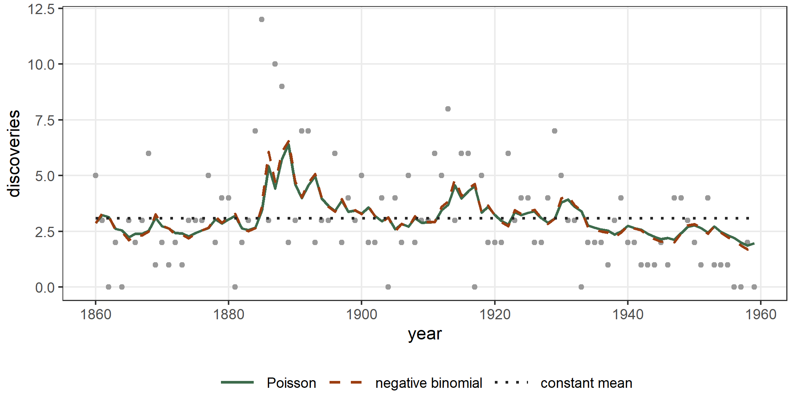
13.4 Durations, positive measurements and proportions
Durations
The time between two trades of a stock is a positive quantity whose mean changes during the day and from one trade to the next. Models of autoregressive conditional duration describe the mean duration by a recursion (Engle and Russell 1998). The package ACDm carries a series of durations between trades, already adjusted for the daily pattern so that their mean is close to one (Belfrage 2025), and we use its first 1000.
The exponential distribution with its mean \(\psi_t\) on the identity link has the score \((x_t - \psi_t)/\psi_t^2\) and the information \(1/\psi_t^2\), so with \(d = 1\) the recursion is driven by \(x_t - \psi_t\), and with an intercept \(\gamma_0\) \[
x_t \sim \mathrm{Exp}(\psi_t), \qquad
\psi_t = \gamma_0\,(1 - \xi) + \kappa\, x_{t-1} + (\xi - \kappa)\,\psi_{t-1}
\] is the ACD(1, 1) model of Engle and Russell (1998), which ACDm fits as the model "ACD":
data(adjDurData, package = "ACDm")
dur <- data.frame(i = 1:1000, x = adjDurData$adjDur[1:1000])
fit_acd_lin <- statmod(x ~ gas(p = 1, q = 1, time = i, scaling = 1),
distrib = exponential_distrib(link_mu = identity_link()),
data = dur)
summary(fit_acd_lin)
#> A statmod fit
#>
#> Call: statmod(formula = x ~ gas(p = 1, q = 1, time = i, scaling = 1),
#> distrib = exponential_distrib(link_mu = identity_link()),
#> data = dur)
#>
#> Distribution: exponential Observations: 1000
#>
#> === mu [identity link]
#>
#> Parametric terms
#> estimate se z p lower upper
#> (Intercept) 1.021 0.07245 14.1 < 1e-16 0.8794 1.163
#>
#> gas(p = 1, q = 1, time = i, scaling = 1) [3 parameters, edf 2.00]
#> estimate se lower upper
#> omega (held) 0
#> kappa1 0.08868 0.0203 0.05662 0.1389
#> xi1 0.924 0.02858 0.8433 0.9639
#>
#> 95% intervals, bayesian variance
#> conditional log-likelihood -982.357185 effective df 3.00
#> cAIC 1970.714 cBIC 1985.438
#> fitted in 150 ms
#> inner max |grad|/se 9.1e-10 min eigen 0.52
#> 1 note: print(summary(fit), notes = TRUE)
acd_lin <- ACDm::acdFit(durations = dur$x, model = "ACD", dist = "exponential",
order = c(1, 1), output = FALSE)
cf_l <- coef(fit_acd_lin)$mu
cbind(statmod = c(omega = cf_l[["(Intercept)"]] * (1 - cf_l[["gas.xi1"]]),
alpha1 = cf_l[["gas.kappa1"]],
beta1 = cf_l[["gas.xi1"]] - cf_l[["gas.kappa1"]]),
ACDm = acd_lin$mPar)
#> statmod ACDm
#> omega 0.07765901 0.07785338
#> alpha1 0.08868492 0.08830334
#> beta1 0.83528653 0.83509921
c(statmod = logLik(fit_acd_lin),
ACDm = acd_lin$goodnessOfFit["LogLikelihood", "value"])
#> statmod ACDm
#> -982.3572 -982.3681The estimates agree to two decimals, and the log-likelihoods differ by 0.011, because the two recursions start from different values.
On the logarithmic link the score with respect to \(\log\psi_t\) is \(x_t/\psi_t - 1\) and its information is one, so \(d\) does not change the model: \[ x_t \sim \mathrm{Exp}(\psi_t), \qquad \log\psi_t = \beta_0 + f_t, \qquad f_t = \kappa\left(\frac{x_{t-1}}{\psi_{t-1}} - 1\right) + \xi f_{t-1}. \] This is the logarithmic ACD model of Bauwens and Giot (2000) in its second form, \(\log\psi_t = \omega_A + \kappa\, x_{t-1}/\psi_{t-1} + \xi\log\psi_{t-1}\), with \(\omega_A = \beta_0 (1 - \xi) - \kappa\).
fit_acd <- statmod(x ~ gas(p = 1, q = 1, time = i),
distrib = exponential_distrib(), data = dur)
summary(fit_acd)
#> A statmod fit
#>
#> Call: statmod(formula = x ~ gas(p = 1, q = 1, time = i), distrib = exponential_distrib(),
#> data = dur)
#>
#> Distribution: exponential Observations: 1000
#>
#> === mu [log link]
#>
#> Parametric terms
#> estimate se z p lower upper
#> (Intercept) -0.01154 0.06082 -0.1898 0.8495 -0.1307 0.1077
#>
#> gas(p = 1, q = 1, time = i) [3 parameters, edf 2.00]
#> estimate se lower upper
#> omega (held) 0
#> kappa1 0.08224 0.01732 0.05442 0.1243
#> xi1 0.9119 0.03117 0.8262 0.9563
#>
#> 95% intervals, bayesian variance
#> conditional log-likelihood -982.730426 effective df 3.00
#> cAIC 1971.461 cBIC 1986.184
#> fitted in 130 ms
#> inner max |grad|/se 9.7e-11 min eigen 0.5
#> 1 note: print(summary(fit), notes = TRUE)
acd <- ACDm::acdFit(durations = dur$x, model = "LACD2", dist = "exponential",
order = c(1, 1), output = FALSE)
cf_acd <- coef(fit_acd)$mu
cbind(statmod = c(omega = cf_acd[["(Intercept)"]] * (1 - cf_acd[["gas.xi1"]]) -
cf_acd[["gas.kappa1"]],
alpha1 = cf_acd[["gas.kappa1"]], beta1 = cf_acd[["gas.xi1"]]),
ACDm = acd$mPar)
#> statmod ACDm
#> omega -0.08325587 -0.08325924
#> alpha1 0.08223883 0.08188190
#> beta1 0.91187597 0.91212143
c(statmod = logLik(fit_acd),
ACDm = acd$goodnessOfFit["LogLikelihood", "value"])
#> statmod ACDm
#> -982.7304 -982.7088The estimates agree to three decimals, and the log-likelihoods differ by 0.022, because the two recursions start from different values.
Positive measurements and proportions
The family can be any distribution of distributions7. The series lh gives the level of luteinizing hormone in blood samples taken every ten minutes from a woman, 48 positive measurements (Diggle 1990). A gamma response with mean \(\mu_t\) and dispersion \(\phi\) has the score \((y_t/\mu_t - 1)/\phi\) with respect to \(\log\mu_t\) and the information \(1/\phi\), which is constant, so \(d\) does not change the model:
lhd <- data.frame(t = 1:48, y = as.numeric(lh))
fit_lh <- statmod(y ~ gas(p = 1, q = 1, time = t),
distrib = gamma1_distrib(), data = lhd)
summary(fit_lh)
#> A statmod fit
#>
#> Call: statmod(formula = y ~ gas(p = 1, q = 1, time = t), distrib = gamma1_distrib(),
#> data = lhd)
#>
#> Distribution: gamma1 Observations: 48
#>
#> === mu [log link]
#>
#> Parametric terms
#> estimate se z p lower upper
#> (Intercept) 0.8711 0.05488 15.87 < 1e-16 0.7635 0.9786
#>
#> gas(p = 1, q = 1, time = t) [3 parameters, edf 2.00]
#> estimate se lower upper
#> omega (held) 0
#> kappa1 0.02106 0.00619 0.01184 0.03747
#> xi1 0.4513 0.1826 0.03695 0.7332
#>
#> === phi [log link]
#>
#> Parametric terms
#> estimate se z p lower upper
#> (Intercept) -3.351 0.2029 -16.51 < 1e-16 -3.748 -2.953
#>
#> 95% intervals, bayesian variance
#> conditional log-likelihood -28.735877 effective df 4.00
#> cAIC 65.472 cBIC 72.957
#> fitted in 170 ms
#> inner max |grad|/se 7.3e-10 min eigen 0.27
#> 1 note: print(summary(fit), notes = TRUE)
fit_lh0 <- statmod(y ~ 1, distrib = gamma1_distrib(), data = lhd)
c(constant = AIC(fit_lh0), score_driven = AIC(fit_lh))
#> constant score_driven
#> 80.70817 65.47175A proportion has a beta distribution. The series Seatbelts gives the monthly numbers of car drivers, front-seat passengers and rear-seat passengers killed or seriously injured in Great Britain from 1969 to 1984, and a law made front seat belts compulsory from February 1983 (Harvey and Durbin 1986). We model the share of front-seat passengers among all the passengers, \(y_t\), with a beta distribution of mean \(\mu_t\) and precision \(\phi\), the law as a covariate of the mean and a score-driven filter beside it: \[
y_t \sim \mathrm{Beta}(\mu_t, \phi), \qquad
\mathrm{logit}\,\mu_t = \beta_0 + \beta_1\,\mathrm{law}_t + f_t .
\] On the logit link the information of the beta distribution changes with \(\mu_t\), so each \(d\) gives a different model; we use the default \(d = 0\).
belts <- data.frame(month = 1:192, law = Seatbelts[, "law"],
share = Seatbelts[, "front"] /
(Seatbelts[, "front"] + Seatbelts[, "rear"]))
fit_belt <- statmod(share ~ law + gas(p = 1, q = 1, time = month),
distrib = beta1_distrib(), data = belts)
summary(fit_belt)
#> A statmod fit
#>
#> Call: statmod(formula = share ~ law + gas(p = 1, q = 1, time = month),
#> distrib = beta1_distrib(), data = belts)
#>
#> Distribution: beta1 Observations: 192
#>
#> === mu [logit link]
#>
#> Parametric terms
#> estimate se z p lower upper
#> (Intercept) 0.7921 0.01922 41.21 < 1e-16 0.7545 0.8298
#> law -0.4471 0.05069 -8.82 < 1e-16 -0.5464 -0.3477
#>
#> gas(p = 1, q = 1, time = month) [3 parameters, edf 2.00]
#> estimate se lower upper
#> omega (held) 0
#> kappa1 0.006212 0.0009893 0.004546 0.008488
#> xi1 0.5997 0.08822 0.3992 0.7455
#>
#> === phi [log link]
#>
#> Parametric terms
#> estimate se z p lower upper
#> (Intercept) 6.004 0.1019 58.89 < 1e-16 5.804 6.203
#>
#> 95% intervals, bayesian variance
#> conditional log-likelihood 450.481842 effective df 5.00
#> cAIC -890.964 cBIC -874.676
#> fitted in 280 ms
#> inner max |grad|/se 1.3e-09 min eigen 0.35
#> 1 note: print(summary(fit), notes = TRUE)
fit_belt0 <- statmod(share ~ law, distrib = beta1_distrib(), data = belts)
c(static = AIC(fit_belt0), score_driven = AIC(fit_belt))
#> static score_driven
#> -821.1532 -890.9637With the filter beside it the law lowers the logit of the front-seat share by 0.447. Figure 13.6 shows the fitted means of the three series.
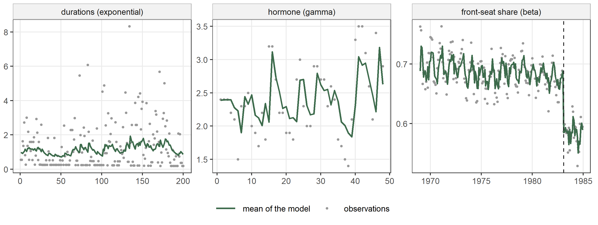
13.5 Panels of short series
The data frame Ovary of the package nlme gives the number of ovarian follicles larger than 10 mm in eleven mares, counted on 25 to 31 days of one cycle (Pinheiro and Bates 2000). The variable Time is scaled so that ovulations fall at 0 and 1, and the mean follows the cycle, which we describe with \(\sin(2\pi t)\) and \(\cos(2\pi t)\). Around that mean the counts of one mare are correlated from one day to the next. We treat the counts as gaussian, as Pinheiro and Bates (2000) do, and we give every mare a score-driven filter: \[
y_{it} \sim \mathrm{N}(\mu_{it}, \sigma), \qquad
\mu_{it} = \beta_0 + \beta_1 \sin(2\pi t) + \beta_2 \cos(2\pi t) + f_{it},
\] \[
f_{it} = \kappa\, s_{i,t-1} + \xi f_{i,t-1}.
\] The argument by of gas() names the grouping: the recursion runs over the series of each mare separately, from its own starting level, and the parameters are shared.
data(Ovary, package = "nlme")
fit_ov <- statmod(follicles ~ sin(2 * pi * Time) + cos(2 * pi * Time) +
gas(p = 1, q = 1, by = Mare, time = Time),
distrib = gaussian1_distrib(), data = Ovary)
summary(fit_ov)
#> A statmod fit
#>
#> Call: statmod(formula = follicles ~ sin(2 * pi * Time) + cos(2 * pi *
#> Time) + gas(p = 1, q = 1, by = Mare, time = Time), distrib = gaussian1_distrib(),
#> data = Ovary)
#>
#> Distribution: gaussian1 Observations: 308
#>
#> === mu [identity link]
#>
#> Parametric terms
#> estimate se z p lower upper
#> (Intercept) 11.53 0.7843 14.7 < 1e-16 9.989 13.06
#> sin(2 * pi * Time) -2.774 0.5011 -5.537 3.078e-08 -3.756 -1.792
#> cos(2 * pi * Time) -0.8438 0.5724 -1.474 0.1405 -1.966 0.2781
#>
#> gas(p = 1, q = 1, by = Mare, time = Time) [3 parameters, edf 2.00]
#> estimate se lower upper
#> omega (held) 0
#> kappa1 4.851 0.7216 3.624 6.493
#> xi1 0.9071 0.04016 0.7882 0.9607
#>
#> === sigma [log link]
#>
#> Parametric terms
#> estimate se z p lower upper
#> (Intercept) 1.1 0.04029 27.3 < 1e-16 1.021 1.179
#>
#> 95% intervals, bayesian variance
#> conditional log-likelihood -775.818840 effective df 6.00
#> cAIC 1563.638 cBIC 1586.018
#> fitted in 200 ms
#> inner max |grad|/se 1e-09 min eigen 0.39
#> 1 note: print(summary(fit), notes = TRUE)As in Section 13.1, a gaussian filter on the mean is an ARMA(1, 1), now one for each mare. The function gls() of nlme fits the same mean with ARMA(1, 1) errors within each mare:
gls_ov <- nlme::gls(follicles ~ sin(2 * pi * Time) + cos(2 * pi * Time),
data = Ovary, method = "ML",
correlation = nlme::corARMA(p = 1, q = 1, form = ~ 1 | Mare))
summary(gls_ov)
#> Generalized least squares fit by maximum likelihood
#> Model: follicles ~ sin(2 * pi * Time) + cos(2 * pi * Time)
#> Data: Ovary
#> AIC BIC logLik
#> 1561.21 1583.591 -774.6051
#>
#> Correlation Structure: ARMA(1,1)
#> Formula: ~1 | Mare
#> Parameter estimate(s):
#> Phi1 Theta1
#> 0.8888272 -0.3601042
#>
#> Coefficients:
#> Value Std.Error t-value p-value
#> (Intercept) 12.059654 0.8125785 14.841216 0.0000
#> sin(2 * pi * Time) -2.889310 0.4999785 -5.778869 0.0000
#> cos(2 * pi * Time) -0.803096 0.5615700 -1.430090 0.1537
#>
#> Correlation:
#> (Intr) s(*p*T
#> sin(2 * pi * Time) 0.000
#> cos(2 * pi * Time) -0.263 0.000
#>
#> Standardized residuals:
#> Min Q1 Med Q3 Max
#> -2.46034442 -0.74285874 -0.01393033 0.66020652 3.29324902
#>
#> Residual standard error: 4.493566
#> Degrees of freedom: 308 total; 305 residual
cf_ov <- coef(fit_ov)$mu
s2_ov <- exp(2 * coef(fit_ov)$sigma[["(Intercept)"]])
arma_gls <- coef(gls_ov$modelStruct$corStruct, unconstrained = FALSE)
cbind(statmod = c(cf_ov[c("(Intercept)", "sin(2 * pi * Time)",
"cos(2 * pi * Time)")],
ar1 = cf_ov[["gas.xi1"]],
ma1 = cf_ov[["gas.kappa1"]] / s2_ov - cf_ov[["gas.xi1"]]),
gls = c(coef(gls_ov), arma_gls))
#> statmod gls
#> (Intercept) 11.5263428 12.0596536
#> sin(2 * pi * Time) -2.7743689 -2.8893100
#> cos(2 * pi * Time) -0.8437653 -0.8030955
#> ar1 0.9071075 0.8888272
#> ma1 -0.3695899 -0.3601042
c(statmod = logLik(fit_ov), gls = logLik(gls_ov))
#> statmod gls
#> -775.8188 -774.6051The estimates are close, and the log-likelihoods differ for the reason given for the Nile: gls() gives the first count of each mare the variance of the stationary process, while our filter starts every mare at the level \(f_{i1} = 0\).
A level for each mare
The mares differ in their average number of follicles. In a score-driven model the level around which \(f_{it}\) fluctuates is \(\omega/(1-\xi)\), so a mare-specific \(\omega_i\) gives each mare a level of its own. A parameter of gas() takes a formula, as the parameters of nl() do in Section 12.3, and with omega ~ 1 + random(~ 1 | Mare) it is \(\omega_i = \omega + b_i\) with \(b_i \sim \mathrm{N}(0, \tau)\). The formula of the mean has no intercept, because the intercept of omega plays its role:
fit_ov_om <- statmod(follicles ~ 0 + sin(2 * pi * Time) + cos(2 * pi * Time) +
gas(p = 1, q = 1, omega ~ 1 + random(~ 1 | Mare),
by = Mare, time = Time),
distrib = gaussian1_distrib(), data = Ovary)
summary(fit_ov_om)
#> A statmod fit
#>
#> Call: statmod(formula = follicles ~ 0 + sin(2 * pi * Time) + cos(2 *
#> pi * Time) + gas(p = 1, q = 1, omega ~ 1 + random(~1 | Mare),
#> by = Mare, time = Time), distrib = gaussian1_distrib(), data = Ovary)
#>
#> Distribution: gaussian1 Observations: 308
#>
#> === mu [identity link]
#>
#> Parametric terms
#> estimate se z p lower upper
#> sin(2 * pi * Time) -2.798 0.456 -6.137 8.427e-10 -3.692 -1.905
#> cos(2 * pi * Time) -0.8938 0.5067 -1.764 0.07776 -1.887 0.09938
#>
#> gas(p = 1, q = 1, omega ~ 1 + random(~1 | Mare), by = Mare, time = Time) [14 parameters, edf 10.96]
#> estimate se lower upper
#> kappa1 3.97 0.6343 2.903 5.43
#> xi1 0.8491 0.04893 0.7207 0.9211
#>
#> omega ~ 1 + random(~1 | Mare)
#> fixed effects
#> (Intercept) 1.784 0.6304 0.5486 3.02
#> random(~1 | Mare) [11 coefficients]
#> sigma [reml] 0.5696 0.2702 0.2248 1.443
#> predicted effects (11 levels of Mare)
#> Min. 1st Qu. Median Mean 3rd Qu. Max.
#> (Intercept) -0.5903 -0.2573 0.05998 0 0.3044 0.5568
#>
#> === sigma [log link]
#>
#> Parametric terms
#> estimate se z p lower upper
#> (Intercept) 1.058 0.04057 26.09 < 1e-16 0.9788 1.138
#>
#> 95% intervals, bayesian variance
#> conditional log-likelihood -762.997826 effective df 13.96
#> cAIC 1553.917 cBIC 1605.991
#> fitted in 1.92 s
#> inner max |grad|/se 1.5e-14 min eigen 0.0078
#> outer max |grad|/se 3.7e-06 min eigen 1The standard deviation of the \(\omega_i\) is \(\hat\tau = 0.570\), which is a standard deviation of \(\hat\tau/(1 - \hat\xi) = 3.77\) follicles between the levels of the mares. As for any random effect, \(\tau\) is estimated by restricted maximum likelihood.
The model with shared parameters is this model with \(\tau = 0\). We compare the two by the likelihood ratio, which needs the maximized likelihood of both, so we fit the second under ml():
fit_ov_ml <- statmod(follicles ~ 0 + sin(2 * pi * Time) + cos(2 * pi * Time) +
gas(p = 1, q = 1, omega ~ 1 + random(~ 1 | Mare),
by = Mare, time = Time),
distrib = gaussian1_distrib(), data = Ovary,
outer_criterion = ml())
l0 <- logLik(fit_ov)
l1 <- logLik(fit_ov_ml, type = "marginal")
lr_ov <- 2 * (as.numeric(l1) - as.numeric(l0))
lr_ov
#> [1] 1.597376
0.5 * pchisq(lr_ov, df = 1, lower.tail = FALSE)
#> [1] 0.1031377The value \(\tau = 0\) is the edge of the range of a standard deviation, so the ratio has the reference distribution of Self and Liang (1987): half the time it is zero and half the time a \(\chi^2_1\), which halves the p-value of the \(\chi^2_1\). The ratio is 1.60, with a p-value of 0.103. Each mare’s filter already moves towards the counts of that mare, so a level for each mare adds little.
The same family of means can be written with a random intercept in the formula of the mean and \(\omega\) held at zero, as in Section 13.1: \(\mu_{it} = \beta_0 + c_i + \beta_1\sin(2\pi t) + \beta_2\cos(2\pi t) + f_{it}\) with \(c_i \sim \mathrm{N}(0, \tau_c)\). For a given \(\xi\), a mare’s intercept \(c_i\) and her level \(\omega_i\) move the mean in the same way when \(\omega_i - \omega = c_i\,(1 - \xi)\):
fit_ov_int <- statmod(follicles ~ sin(2 * pi * Time) + cos(2 * pi * Time) +
random(~ 1 | Mare) +
gas(p = 1, q = 1, by = Mare, time = Time),
distrib = gaussian1_distrib(), data = Ovary,
outer_criterion = ml())
summary(fit_ov_int)
#> A statmod fit
#>
#> Call: statmod(formula = follicles ~ sin(2 * pi * Time) + cos(2 * pi *
#> Time) + random(~1 | Mare) + gas(p = 1, q = 1, by = Mare,
#> time = Time), distrib = gaussian1_distrib(), data = Ovary,
#> outer_criterion = ml())
#>
#> Distribution: gaussian1 Observations: 308
#>
#> === mu [identity link]
#>
#> Parametric terms
#> estimate se z p lower upper
#> (Intercept) 11.53 0.7843 14.7 < 1e-16 9.989 13.06
#> sin(2 * pi * Time) -2.774 0.5011 -5.537 3.078e-08 -3.756 -1.792
#> cos(2 * pi * Time) -0.8438 0.5724 -1.474 0.1405 -1.966 0.2781
#>
#> random(~1 | Mare) [11 coefficients, edf 0.00]
#> estimate
#> sigma [ml] 0.0001355
#> predicted effects (11 levels of Mare)
#> Min. 1st Qu. Median Mean 3rd Qu. Max.
#> (Intercept) -1.911e-08 -8.53e-09 3.061e-09 0 6.802e-09 1.954e-08
#>
#> gas(p = 1, q = 1, by = Mare, time = Time) [3 parameters, edf 2.00]
#> estimate se lower upper
#> omega (held) 0
#> kappa1 4.851 0.7216 3.624 6.493
#> xi1 0.9071 0.04016 0.7882 0.9607
#>
#> === sigma [log link]
#>
#> Parametric terms
#> estimate se z p lower upper
#> (Intercept) 1.1 0.04029 27.3 < 1e-16 1.021 1.179
#>
#> 95% intervals, bayesian variance
#> conditional log-likelihood -775.818840 effective df 6.00
#> cAIC 1563.638 cBIC 1586.018
#> fitted in 1.89 s
#> inner max |grad|/se 3.1e-15 min eigen 0.39
#> outer not available: at a boundary
#> 3 notes: print(summary(fit), notes = TRUE)
c(intercept = logLik(fit_ov_int, type = "marginal"),
level = logLik(fit_ov_ml, type = "marginal"))
#> intercept level
#> -775.8188 -775.0202The two spellings are not the same model. The distribution of the random effects is placed on different quantities: on \(c_i\) the standard deviation of a mare’s level is \(\tau_c\) whatever \(\xi\) is, while on \(\omega_i\) it is \(\tau/(1 - \xi)\), which changes with \(\xi\). Since \(\xi\) is estimated together with the effects, the two criteria differ. Here the random intercept goes to \(\hat\tau_c = 0.00014\), which is the model with shared parameters, while the level of each mare has a standard deviation of 3.70 follicles under ml(), with the larger maximized likelihood.
A loading for each mare
The loading can vary between mares in the same way. It is estimated on the logarithmic scale, and the formula of kappa1 acts on that scale, so \(\kappa_i = \exp(a + c_i)\) with \(c_i \sim \mathrm{N}(0, \tau_\kappa)\):
fit_ov_al <- statmod(follicles ~ 0 + sin(2 * pi * Time) + cos(2 * pi * Time) +
gas(p = 1, q = 1, omega ~ 1 + random(~ 1 | Mare),
kappa1 ~ 1 + random(~ 1 | Mare),
by = Mare, time = Time),
distrib = gaussian1_distrib(), data = Ovary)
summary(fit_ov_al)
#> A statmod fit
#>
#> Call: statmod(formula = follicles ~ 0 + sin(2 * pi * Time) + cos(2 *
#> pi * Time) + gas(p = 1, q = 1, omega ~ 1 + random(~1 | Mare),
#> kappa1 ~ 1 + random(~1 | Mare), by = Mare, time = Time),
#> distrib = gaussian1_distrib(), data = Ovary)
#>
#> Distribution: gaussian1 Observations: 308
#>
#> === mu [identity link]
#>
#> Parametric terms
#> estimate se z p lower upper
#> sin(2 * pi * Time) -2.843 0.4743 -5.995 2.035e-09 -3.773 -1.914
#> cos(2 * pi * Time) -0.9192 0.5106 -1.8 0.07183 -1.92 0.08157
#>
#> gas(p = 1, q = 1, omega ~ 1 + random(~1 | Mare), kappa1 ~ 1 + random(~1 | Mare), by = Mare, time = Time) [25 parameters, edf 13.92]
#> estimate se lower upper
#> xi1 0.8516 0.05179 0.7126 0.9263
#>
#> omega ~ 1 + random(~1 | Mare)
#> fixed effects
#> (Intercept) 1.741 0.6605 0.4463 3.035
#> random(~1 | Mare) [11 coefficients]
#> sigma [reml] 0.5516 0.2489 0.2278 1.336
#> predicted effects (11 levels of Mare)
#> Min. 1st Qu. Median Mean 3rd Qu. Max.
#> (Intercept) -0.589 -0.2329 0.03676 0 0.2806 0.558
#>
#> kappa1 ~ 1 + random(~1 | Mare)
#> fixed effects
#> (Intercept) 1.338 0.1998 0.9465 1.73
#> random(~1 | Mare) [11 coefficients]
#> sigma [reml] 0.3445 0.2178 0.09975 1.189
#> predicted effects (11 levels of Mare)
#> Min. 1st Qu. Median Mean 3rd Qu. Max.
#> (Intercept) -0.424 -0.1064 0.03756 0 0.1746 0.2389
#>
#> === sigma [log link]
#>
#> Parametric terms
#> estimate se z p lower upper
#> (Intercept) 1.043 0.04087 25.52 < 1e-16 0.9629 1.123
#>
#> 95% intervals, bayesian variance
#> conditional log-likelihood -758.289346 effective df 16.92
#> cAIC 1550.411 cBIC 1613.509
#> fitted in 1.75 s
#> inner max |grad|/se 3.8e-15 min eigen 0.0065
#> outer max |grad|/se 1.6e-06 min eigen 0.85The loadings of the mares range from 2.49 to 4.84. Figure 13.7 shows three mares, the one with the lowest level, one in the middle and the one with the highest, with the means of the three models.
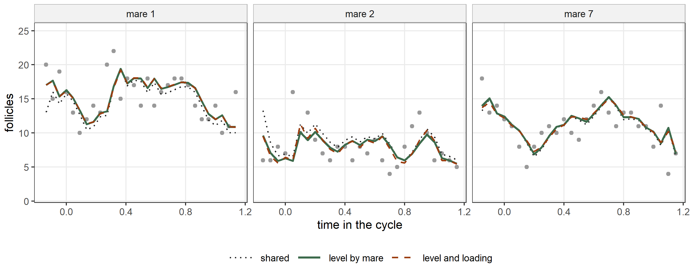
The argument random of predict() cannot set these random effects aside. The level of the filter is a recursion read at the predictor, so removing a random effect would change the whole path of the recursion. Called with random = "zero" on a model with a structural term, predict() signals an error.
13.6 Forecasts beyond the series
predict() continues the filter past the last observation when newdata gives times that the fit did not see. The score has mean zero, so beyond the data the expected score is zero, and the forecast follows the recursion without the score: \[
f_{n+1} = \omega + \kappa\, s_n + \xi f_n, \qquad
f_{n+h} = \omega + \xi f_{n+h-1} \quad (h \ge 2).
\] The forecast therefore approaches the level \(\omega/(1 - \xi)\) around which the series fluctuates, at the rate \(\xi\). In the Nile model \(\omega\) is held at zero and the level is the intercept.
future <- data.frame(year = 1971:1990)
fc_nile <- predict(fit_nile, what = "mu", newdata = future)
head(fc_nile, n = 5)
#> [1] 803.9379 823.8515 840.6721 854.8802 866.8815With se = TRUE, predict() reports a standard error and an interval for each forecast. They are the uncertainty of the estimated parameters, carried by the delta method through the continued recursion, whose derivative in the parameters is computed exactly. A forecast also carries the uncertainty of the future scores, which this standard error leaves out, and predict() issues a warning that states this:
fc_nile_se <- predict(fit_nile, what = "mu", newdata = future, se = TRUE)
#> Warning: The standard error of a prediction past the series is that of the estimated
#> parameters alone. A forecast also carries the uncertainty of the future
#> scores, which this standard error and its interval leave out.
head(fc_nile_se, n = 5)
#> fit se lower upper
#> 1 803.9379 21.68908 761.4281 846.4477
#> 2 823.8515 28.13004 768.7176 878.9854
#> 3 840.6721 34.48581 773.0812 908.2631
#> 4 854.8802 39.07624 778.2922 931.4682
#> 5 866.8815 41.98108 784.6001 949.1630The standard error is 21.7 one year ahead, rises to 44.3 8 years ahead and then stays near 42. Far ahead the forecast approaches the level of the series, the intercept, so its standard error approaches that of the intercept, 46.5.
In a panel the forecast continues the series of one group. The rows of newdata give the group and times after its last observation, and the formula computes the terms of the cycle from Time:
last_1 <- max(Ovary$Time[Ovary$Mare == "1"])
new_1 <- data.frame(Mare = "1", Time = last_1 + 0.045 * (1:6))
fc_ov <- predict(fit_ov_om, what = "mu", newdata = new_1)
fc_ov
#> [1] 13.40279 13.29698 13.43981 13.80897 14.36580 15.05817Figure 13.8 shows the three forecasts.
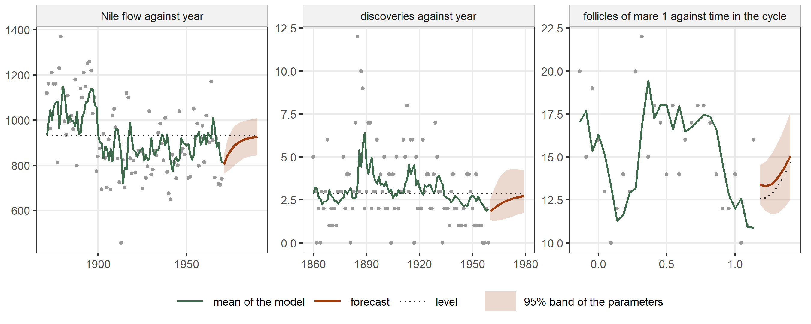
13.7 Hidden regimes: regime()
The data frame geyser of the package MASS records 299 successive eruptions of the Old Faithful geyser in Yellowstone National Park (Azzalini and Bowman 1990; Venables and Ripley 2002). The variable waiting is the time in minutes between the start of one eruption and the start of the next. The waiting times form two groups, one around 55 minutes and one around 80 minutes, and a short waiting time is almost never followed by another short one. A hidden Markov model with two states describes this (Hamilton 1989; Zucchini, MacDonald, and Langrock 2016): \[
y_t \sim \mathrm{N}(\mu_{S_t}, \sigma), \qquad
P(S_t = j \mid S_{t-1} = i) = p_{ij}.
\] The state \(S_t\) is not observed. It follows a Markov chain with transition matrix \(P = (p_{ij})\), and each state has its own mean. In econometrics the same model is called a Markov-switching or regime-switching model. The likelihood is a sum over all paths of the chain, and the forward recursion computes it in one pass over the series, starting from the stationary distribution of the chain.
data(geyser, package = "MASS")
fit_gey <- statmod(waiting ~ regime(k = 2), distrib = gaussian1_distrib(),
data = geyser)
print(summary(fit_gey), notes = TRUE)
#> A statmod fit
#>
#> Call: statmod(formula = waiting ~ regime(k = 2), distrib = gaussian1_distrib(),
#> data = geyser)
#>
#> Distribution: gaussian1 Observations: 299
#>
#> === mu [identity link]
#>
#> Parametric terms
#> estimate se z p lower upper
#> (Intercept) 57.16 0.9073 63 < 1e-16 55.38 58.94
#>
#> regime(k = 2) [6 parameters, edf 3.00]
#> estimate se lower upper
#> level1 (held) 0
#> gap2 24.75 0.9215 23.01 26.63
#> p1.1 1.341e-12
#> p1.2 1
#> p2.1 0.6369 0.0553 0.5233 0.7371
#> p2.2 0.3631 0.0553 0.2629 0.4767
#>
#> === sigma [log link]
#>
#> Parametric terms
#> estimate se z p lower upper
#> (Intercept) 1.926 0.05235 36.78 < 1e-16 1.823 2.028
#>
#> 95% intervals, bayesian variance
#> conditional log-likelihood -1099.633405 effective df 5.00
#> cAIC 2209.267 cBIC 2227.769
#> fitted in 1.57 s
#> inner max |grad|/se 0.022 min eigen 1
#>
#> A level marked held is carried by an intercept in the same equation and
#> is not estimated: the two are exactly confounded, so only one of them can
#> be.
#>
#> p1.1, p1.2 depend on a coordinate that has run to the edge of its chart,
#> so they are reported without a standard error and an interval: the
#> chart's derivative tends to zero there and the delta method would report
#> a standard error that collapses where the quantity stops being
#> identified.The term regime(k = 2) adds the level of the current state to the equation of mu. The levels are written as a first level and positive gaps, so the second state is always the one with the larger mean. The intercept of the equation plays the role of the first level, which is held at zero, as the level of gas() is. The summary gives the gap and the four transition probabilities \(p_{ij}\), named p1.1, p1.2, p2.1 and p2.2. They are estimated through the logarithms of the ratios within each row, and their intervals are built on the logit scale and mapped back.
The two means are 57.2 and 81.9 minutes. After a short waiting time the next one is long with probability 1.000: \(\hat p_{11}\) is at the edge of its range, where the logarithm of its ratio runs to \(-\infty\). There the derivative of the probability with respect to that coordinate goes to zero, and the delta method would report a standard error that vanishes exactly where the data stop locating the probability. The summary therefore reports the first row of \(P\) without a standard error and an interval, and a note below the summary gives the reason. After a long waiting time the next one is short with probability 0.64.
The function statmod_latent() gives the probability of each state at each time given the whole series, which the forward recursion and a backward recursion compute together:
st_gey <- statmod_latent(fit_gey)
head(st_gey, n = 4)
#> state1 state2
#> 1 0.0070761613 0.992923839
#> 2 0.0006371180 0.999362882
#> 3 0.9990760180 0.000923982
#> 4 0.0000140434 0.999985957The package depmixS4 fits hidden Markov models (Visser and Speekenbrink 2010). Its forward recursion, run at our estimates with the initial probabilities set to the stationary distribution of the chain, gives the same log-likelihood and the same probabilities of the states. Its own fit is a different model: each state has its own standard deviation, and the probabilities of the first state are estimated as two further parameters. We start its EM algorithm from our estimates, without the random starts it uses by default.
cf_gey <- coef(fit_gey)$mu
means_gey <- cf_gey[["(Intercept)"]] + c(0, cf_gey[["regime.gap2"]])
P_gey <- matrix(cf_gey[c("regime.p1.1", "regime.p1.2", "regime.p2.1",
"regime.p2.2")], nrow = 2, byrow = TRUE)
delta_gey <- c(P_gey[2, 1], P_gey[1, 2]) / (P_gey[1, 2] + P_gey[2, 1])
sd_gey <- exp(coef(fit_gey)$sigma[["(Intercept)"]])
hmm_gey <- depmixS4::depmix(waiting ~ 1, data = geyser, nstates = 2,
family = gaussian())
hmm_gey <- depmixS4::setpars(hmm_gey, c(delta_gey, P_gey[1, ], P_gey[2, ],
means_gey[1], sd_gey,
means_gey[2], sd_gey))
fb_gey <- depmixS4::forwardbackward(hmm_gey)
c(statmod = logLik(fit_gey), depmixS4 = fb_gey$logLike)
#> statmod depmixS4
#> -1099.633 -1099.633
max(abs(as.matrix(st_gey) - fb_gey$gamma))
#> [1] 1.665335e-15
hmm_fit <- depmixS4::fit(hmm_gey, verbose = FALSE,
emcontrol = depmixS4::em.control(random.start = FALSE))
#> converged at iteration 21 with logLik: -1092.399
depmixS4::getpars(hmm_fit)
#> pr1 pr2
#> 0.000000e+00 1.000000e+00 2.819977e-23 1.000000e+00 7.753024e-01 2.246976e-01
#> (Intercept) sd (Intercept) sd
#> 5.914661e+01 9.179019e+00 8.247550e+01 6.214501e+00
ll_hmm <- depmixS4::forwardbackward(hmm_fit)$logLike
bic_hmm <- -2 * ll_hmm + log(nrow(geyser)) * depmixS4::freepars(hmm_fit)
c(statmod = BIC(fit_gey), depmixS4 = bic_hmm)
#> statmod depmixS4
#> 2227.769 2224.702The two forward recursions agree, and the probabilities of the states differ by at most 2e-15. With a standard deviation for each state the fit of depmixS4 has a lower BIC. In statmodels7 a regime term sits in the equation of one parameter, so the standard deviation of this model is common to the two states.
Figure 13.9 shows the first 100 waiting times with the mean of the model, which predict() computes as the average of the two means weighted by the probabilities of the states. The background shows the most probable state of each eruption, and the lower panel the probability of the long state.
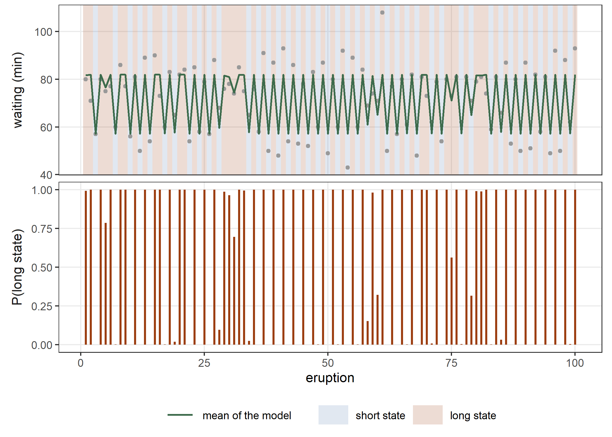
More states, and more than one start
The likelihood of a regime model often has several local maxima, and the starting point decides which one the fit reaches. The first start puts the levels at quantiles of the response. The argument n_start of regime() adds further starts around it, and the fit keeps the best. With three states:
fit_gey3 <- statmod(waiting ~ regime(k = 3, n_start = 3),
distrib = gaussian1_distrib(), data = geyser)
summary(fit_gey3)
#> A statmod fit
#>
#> Call: statmod(formula = waiting ~ regime(k = 3, n_start = 3), distrib = gaussian1_distrib(),
#> data = geyser)
#>
#> Distribution: gaussian1 Observations: 299
#>
#> === mu [identity link]
#>
#> Parametric terms
#> estimate se z p lower upper
#> (Intercept) 54.74 0.5975 91.61 < 1e-16 53.57 55.91
#>
#> regime(k = 3, n_start = 3) [12 parameters, edf 8.00]
#> estimate se lower upper
#> level1 (held) 0
#> gap2 20.67 0.8659 19.04 22.43
#> gap3 9.681 0.8948 8.077 11.6
#> p1.1 1.946e-12
#> p1.2 5.478e-13
#> p1.3 1
#> p2.1 0.2506 0.05627 0.1567 0.3756
#> p2.2 0.6347 0.06618 0.4982 0.7525
#> p2.3 0.1147 0.06358 0.03661 0.3065
#> p3.1 0.667 0.0479 0.5675 0.7535
#> p3.2 0.2963 0.04974 0.2088 0.402
#> p3.3 0.0367 0.02903 0.007562 0.16
#>
#> === sigma [log link]
#>
#> Parametric terms
#> estimate se z p lower upper
#> (Intercept) 1.665 0.04873 34.17 < 1e-16 1.57 1.761
#>
#> 95% intervals, bayesian variance
#> conditional log-likelihood -1053.391982 effective df 10.00
#> cAIC 2126.784 cBIC 2163.788
#> fitted in 6.63 s
#> inner max |grad|/se 0.018 min eigen 1
#> 2 notes: print(summary(fit), notes = TRUE)
c(two = BIC(fit_gey), three = BIC(fit_gey3))
#> two three
#> 2227.769 2163.788The three means are 54.7, 75.4 and 85.1 minutes, and the BIC prefers three states. The model with two states is the one with three in which two states coincide, a point where the transition probabilities of the third state are not defined, so the likelihood ratio between them has no \(\chi^2\) reference (Davies 1987). The criteria do not have this problem. Figure 13.10 shows the first 100 waiting times with the mean of the three-state model and the most probable state of each eruption.
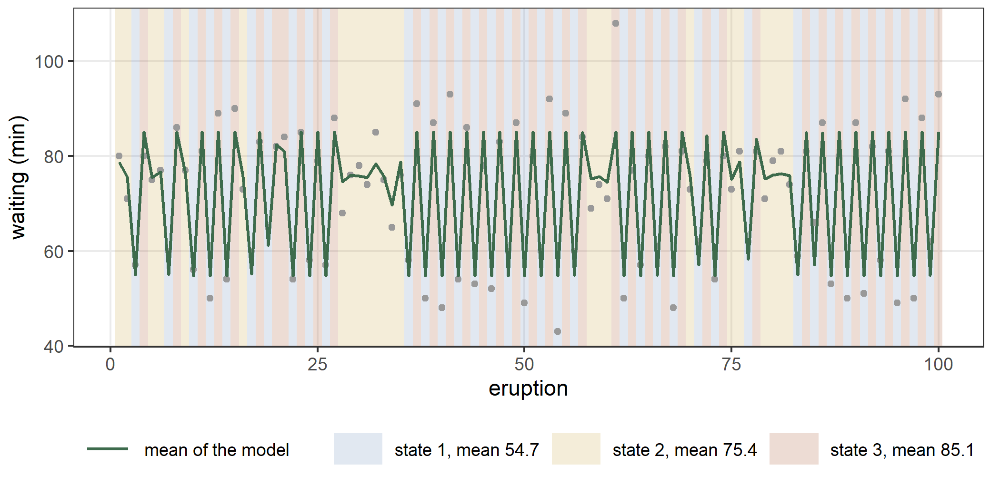
13.8 Regimes with covariates, and on the scale
The other terms of an equation can sit beside regime(). The waiting time after an eruption depends on how long the eruption lasted. We add the duration of the previous eruption, dlag, to the equation of the mean: \[
y_t \sim \mathrm{N}(\mu_t, \sigma), \qquad
\mu_t = \beta_0 + \beta_1\, d_{t-1} + \lambda_{S_t}.
\] The first eruption has no previous one, so we fit the model to the other 298 waiting times, and the model without states to the same ones.
geyser$dlag <- c(NA, head(geyser$duration, n = -1))
fit_gey_d <- statmod(waiting ~ dlag + regime(k = 2),
distrib = gaussian1_distrib(), data = geyser[-1, ])
summary(fit_gey_d)
#> A statmod fit
#>
#> Call: statmod(formula = waiting ~ dlag + regime(k = 2), distrib = gaussian1_distrib(),
#> data = geyser[-1, ])
#>
#> Distribution: gaussian1 Observations: 298
#>
#> === mu [identity link]
#>
#> Parametric terms
#> estimate se z p lower upper
#> (Intercept) 34.3 1.445 23.74 < 1e-16 31.47 37.13
#> dlag 10.17 0.4936 20.6 < 1e-16 9.202 11.14
#>
#> regime(k = 2) [6 parameters, edf 3.00]
#> estimate se lower upper
#> level1 (held) 0
#> gap2 8.074 1.096 6.188 10.53
#> p1.1 0.4825 0.1793 0.1859 0.792
#> p1.2 0.5175 0.1793 0.208 0.8141
#> p2.1 1
#> p2.2 7.934e-11
#>
#> === sigma [log link]
#>
#> Parametric terms
#> estimate se z p lower upper
#> (Intercept) 1.637 0.06099 26.84 < 1e-16 1.517 1.756
#>
#> 95% intervals, bayesian variance
#> conditional log-likelihood -965.215121 effective df 6.00
#> cAIC 1942.430 cBIC 1964.613
#> fitted in 2.49 s
#> inner max |grad|/se 0.016 min eigen 0.05
#> 2 notes: print(summary(fit), notes = TRUE)
fit_gey_d0 <- statmod(waiting ~ dlag, distrib = gaussian1_distrib(),
data = geyser[-1, ])
c(static = BIC(fit_gey_d0), regime = BIC(fit_gey_d))
#> static regime
#> 1966.433 1964.613A covariate shifts the mean of every state by the same amount, here 10.17 minutes for each minute of the previous eruption. The gap between the states falls from 24.8 to 8.1 minutes, because the duration of the previous eruption explains most of the difference between short and long waiting times, and the BIC still prefers the model with the states. The transition probabilities of regime() are constant: they do not depend on covariates, and a covariate can enter the model only through the equations of the parameters.
The term can also sit in the equation of another parameter. On the DAX returns, a chain on the scale gives a model with a quiet state and a turbulent state: \[ r_t \sim \mathrm{N}(\mu, \sigma_t), \qquad \log \sigma_t = \gamma_0 + \lambda_{S_t}. \]
fit_dax_r <- statmod(r ~ 1 | sigma ~ regime(k = 2), distrib = gaussian1_distrib(),
data = dax)
summary(fit_dax_r)
#> A statmod fit
#>
#> Call: statmod(formula = r ~ 1 | sigma ~ regime(k = 2), distrib = gaussian1_distrib(),
#> data = dax)
#>
#> Distribution: gaussian1 Observations: 1859
#>
#> === mu [identity link]
#>
#> Parametric terms
#> estimate se z p lower upper
#> (Intercept) 0.0911 0.02011 4.529 5.912e-06 0.05168 0.1305
#>
#> === sigma [log link]
#>
#> Parametric terms
#> estimate se z p lower upper
#> (Intercept) -0.3019 0.02775 -10.88 < 1e-16 -0.3562 -0.2475
#>
#> regime(k = 2) [6 parameters, edf 3.00]
#> estimate se lower upper
#> level1 (held) 0
#> gap2 0.7522 0.04198 0.6743 0.8392
#> p1.1 0.9875 0.003965 0.9768 0.9933
#> p1.2 0.01251 0.003965 0.006709 0.02321
#> p2.1 0.03315 0.01087 0.01734 0.06247
#> p2.2 0.9668 0.01087 0.9375 0.9827
#>
#> 95% intervals, bayesian variance
#> conditional log-likelihood -2520.608527 effective df 5.00
#> cAIC 5051.217 cBIC 5078.856
#> fitted in 3.6 s
#> inner max |grad|/se 0.0044 min eigen 1
#> 1 note: print(summary(fit), notes = TRUE)
c(score_driven = AIC(fit_dax), regime = AIC(fit_dax_r))
#> score_driven regime
#> 5240.699 5051.217The two states have standard deviations of 0.74 and 1.57 percent. Each state lasts long: the probability of staying in the quiet state is 0.987 and that of staying in the turbulent state 0.967. With the gaussian distribution this model has a lower AIC than the score-driven model of Section 13.2. Figure 13.11 shows the fitted standard deviation over the absolute returns, with the most probable state of each day in the background, and the probability of the turbulent state. predict() gives the standard deviation as the exponential of the predictor averaged over the probabilities of the states.
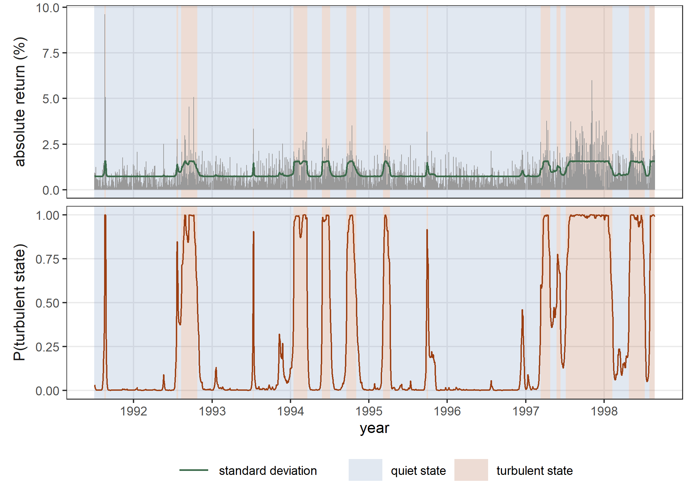